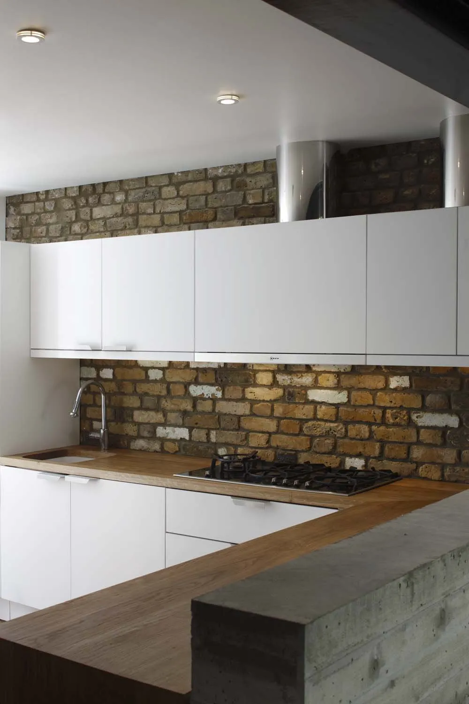
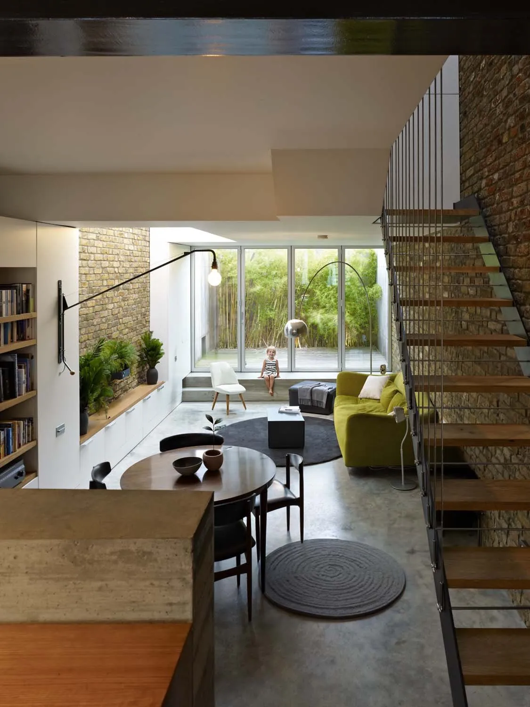
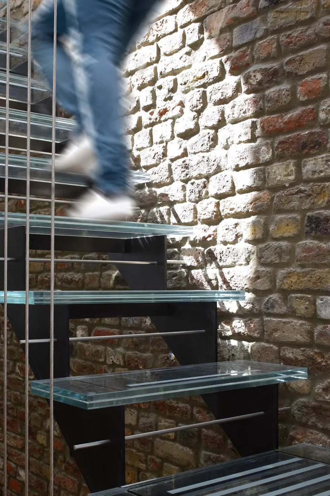
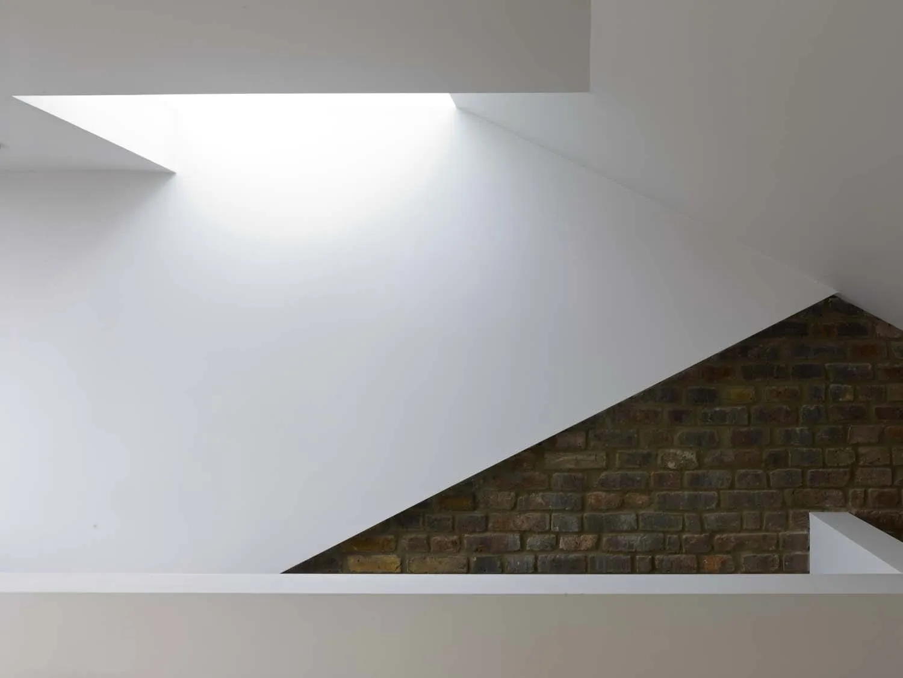
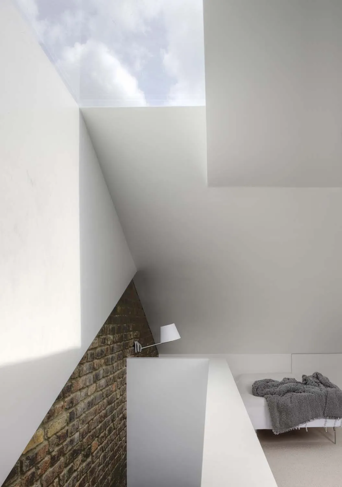
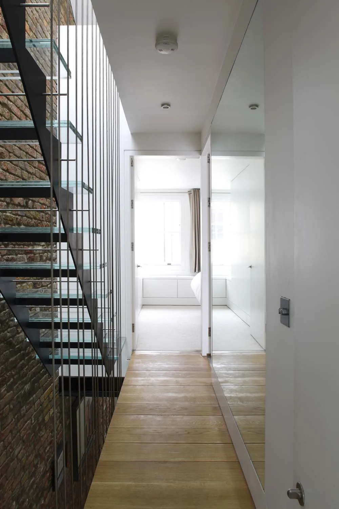
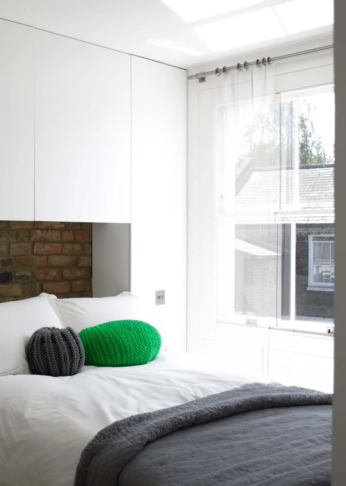
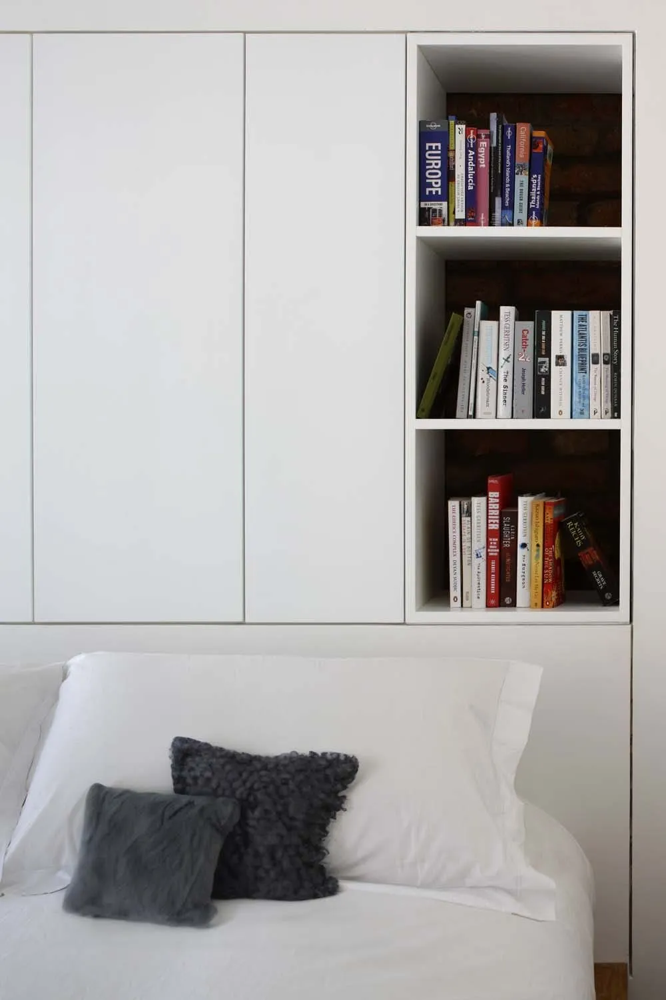
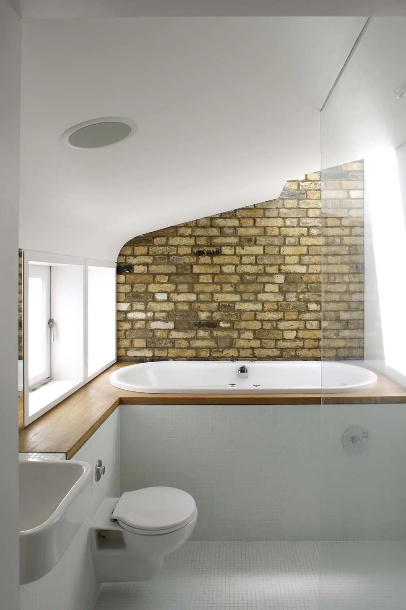

Modern Terrace
An Islington terrace reworked around a skylit glass-treaded stair, board-marked concrete walls and an open inglenook fireplace at the centre of the plan.
A terrace, properly lit.
The site was a three-bedroom terrace in Islington with the usual problems — a dark middle, a cold-feeling rear extension, an attic that wasn't doing anything. The brief was to make the house warm, efficient and properly lit, and to convert the attic into a fourth bedroom.
The plan brings a single skylight down over a new stair at the heart of the house. The second flight is built from glass treads, so daylight from the skylight reaches the lower floor without being broken by the stair itself. A mirror on the first-floor landing extends the reach.
Underfloor heating runs through; walls are insulated to a much higher standard than the original build. Concrete floors and board-marked concrete walls hold an open inglenook fireplace as the centrepiece — the board marks on the walls keep the handmade character of the construction visible.
Daily Telegraph Homebuilding & Renovating Award winner, 2008.






"The skylight, the glass treads, the mirror on the landing — three pieces that together drop light right through the house."
Studio



What it's made of.